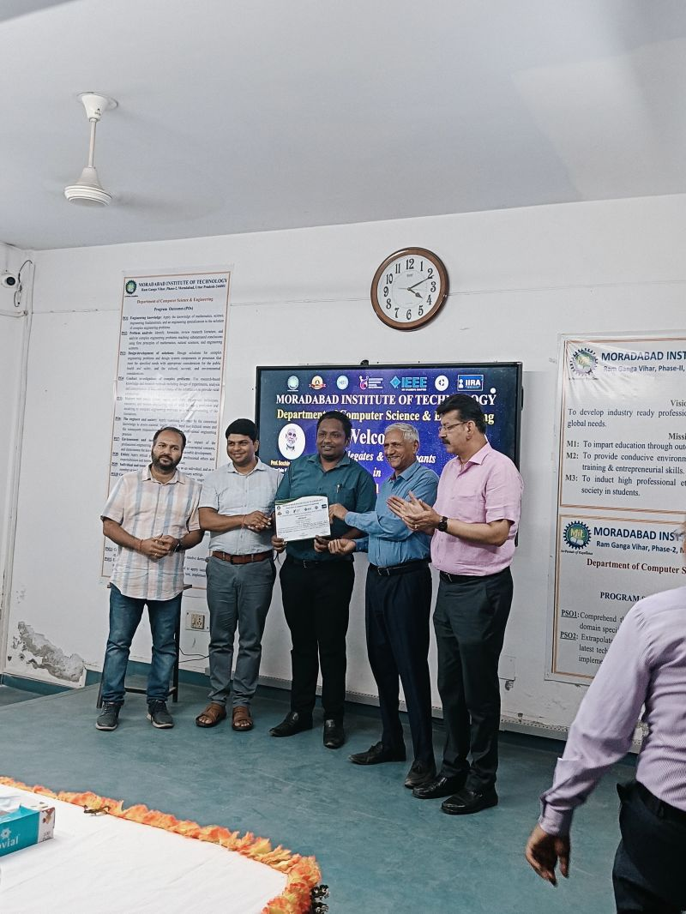
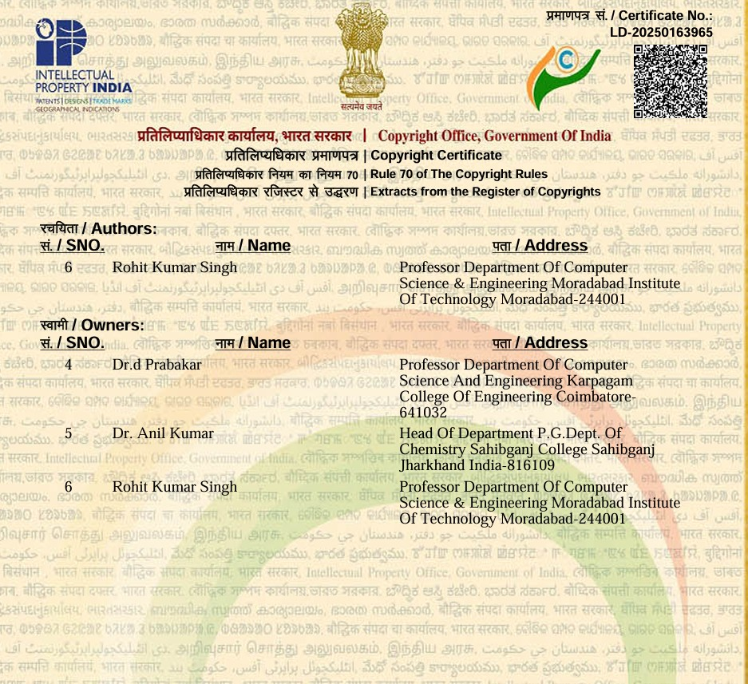
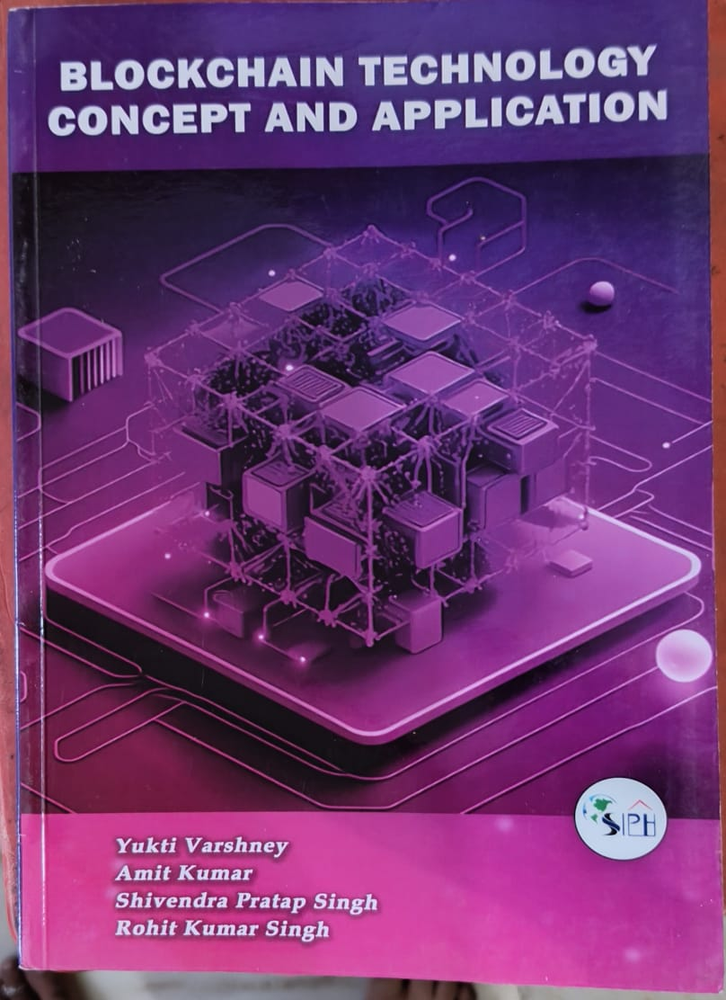

Academic Highlights
Best Paper Award
Received the Best Paper Award at the ICTEM 2026 Conference.

Best Paper Award
Received the Best Paper Award at the IIRA 2025 Conference.

Patent & Copyright
UK Design Patent – “Mathematics Teaching Projection Device”, Design No. 6375582, granted 10 July 2024.
Indian Copyright – “Development of Smart Autonomous Water Quality Analysis Vehicle (AQV) Using IoT and AI Strategies in Real Time Pond Surface”, Certificate No. LD-20250163965.
Granted

Publications & Books
19 publications, including papers in IEEE Xplore and AIP Conference Proceedings and book chapters with IGI Global (5 Scopus-indexed).
Book: Blockchain Technology: Concept and Application (Scientific International Publishing House, ISBN 978-93-6132-622-6).
Published
PhD Research
Deep Learning for Permafrost Monitoring using Remote Sensing Data – IFTM University, Moradabad (coursework CGPA 8.2).
OngoingReviewer & Committee Roles
Reviewer for international conferences, journals and IGI Global books.
Show all 12
- OTCON 4.0 – OP Jindal University, Raigarh (Apr 2025)
- ICIC 2025 – CGC College of Engineering, Mohali (Apr 2025)
- IC3SE 2025 – Amity University, Greater Noida (Mar 2025)
- CE2CT 2025 – Graphic Era Hill University (Feb 2025)
- Global AI Summit 2024 – Bennett University, Lucknow (Sep 2024)
- ICASET 2024 – Integral University, Lucknow (Jul 2024)
- ICTEM 2024 – MIT Moradabad (also Committee Member)
- IIRA 4.0 – MIT Moradabad (Mar 2024)
- Asian Journal of Research in Computer Science (Mar 2025)
- Book: Understanding the Human Factors in the Psychology of Cyber Threats, IGI Global
- Book: Effective Strategies for Combatting Social Engineering in Cybersecurity, IGI Global
- Coordinating Committee Member – IEEE ICCN 2015 and CNC 2015 National Seminar, ITM University, Gwalior
Coordinator / Organiser: IP Awareness Program by the Intellectual Property Office, India, at MIT Moradabad (10 Sep 2024).
ActiveLeadership Roles
MIT Moradabad
- Convener, KAPILA / Patent / IPR Cell
- Convener, Invitation Committee
- Coordinator, CSSS (Coordinating Student Societies)
- Tech Guru, IDEA Lab
- Coordinator, CO-PO Attainment
- Coordinator, Course Files
- Member, NAAC and NBA Committee
- Member, Examination Cell
- Member, Time Table Committee (CSE)
- Member, Website / Social Media Committee
Earlier roles at ITM University, Gwalior
- Coordinator, KRONOS – Annual Tech Fest
- Member, Board of Studies (BOS), CSE
- Member, Examination Department
- Member, Outdoor Counselling Team
- Admission & Counselling Coordinator (Patna & Ranchi offices)
- Represented ITM University at education fairs and spot counselling in Bihar and Jharkhand
Faculty Development Programs
Completed 35 FDPs and workshops on AI, deep learning, generative AI, cyber security, blockchain, IPR, OBE/NBA and NEP 2020, including AICTE ATAL, NITTTR, IIT Bombay and SVNIT programmes.
Certified
Show all 35 FDPs
- Python for Machine Learning – MIT Moradabad, with Spoken Tutorial Project, IIT Bombay (22–27 Jun 2026)
- Integrating AI Tools in OBE Framework for NAAC and NBA Compliance – ECE Dept., MIT Moradabad (26 May – 1 Jun 2026)
- Modern Educators AI Tool Box for Productivity Enhancement – AICTE-recognised, CSE Dept., MIT Moradabad, recognised by NITTTR Chandigarh (18–22 May 2026)
- Generative & Agentic AI – Tools & Demos – SVNIT Surat, technically co-sponsored by IEEE Gujarat Section (16–21 Feb 2026)
- AICTE ATAL FDP: Digital Application Fundamentals – nasscom (2–7 Feb 2026)
- Digital Transformation and Emerging Technologies – CSE Dept., MIT Moradabad (27–31 Jan 2026)
- Innovation, Entrepreneurship & Design Thinking – ECE Dept., MIT Moradabad (19–23 Jan 2026)
- AICTE ATAL FDP: AI Leading to Academic Excellence – Transforming Academic Writing & Research – Oriental College of Management, Bhopal (12–17 Jan 2026)
- IP Utsav Master Class Series – AICTE & MIC (21–26 Apr 2025)
- AICTE ATAL FDP: Deep Learning and Computer Vision in Clinical Research – Thiagarajar College of Engineering (17–22 Feb 2025)
- AI Tools – Dayananda Sagar Academy of Technology and Management with Brainovision, in collaboration with AICTE (17–21 Feb 2025)
- Methods of Research and Publication Ethics – NITTTR, held at MIT Moradabad (17–21 Feb 2025)
- Generative AI – CSE Dept., MIT Moradabad with Logicpro Infosystem (27–31 Jan 2025)
- AICTE ATAL FDP: AI Enabled Collaborative Learning in 6G and Beyond – Manipal University Jaipur (20–25 Jan 2025)
- AICTE ATAL FDP: Quantum Machine Learning – Raj Kumar Goel Institute of Technology (6–11 Jan 2025)
- AICTE ATAL FDP: Blockchain and Cyber Security for Smart City Infrastructure – Priyadarshini College of Engineering (2–7 Dec 2024)
- AICTE ATAL FDP: Innovative Applications and Ethical Considerations of AI in Modern Research – Bhagwan Parshuram Institute of Technology (25–30 Nov 2024)
- Cryptography and Network Security – CSE Dept., NITTTR (16–20 Sep 2024)
- Deep Learning for Engineering Applications – CSE Dept., NITTTR (2–6 Sep 2024)
- Entrepreneurship, Incubation and Innovation – Bansal Institute of Engineering and Technology, Lucknow (5–10 Aug 2024)
- Inculcating Universal Human Values in Technical Education – AICTE, at MIT Moradabad (25–27 Jul 2024)
- Recent Trends in Computing 4.0 – Vishwakarma Institute of Technology, Pune (8–13 Jul 2024)
- Blockchain Technology and Application – BIT Mesra, Noida Campus (24–28 Jun 2024)
- Intellectual Property Rights in the Age of AI, ML, Cyber Security and Blockchain – Mangalmay Institute of Management and Technology (24–28 Jun 2024)
- Workshop: Transform Your Future with Generative AI – Pencil Blitz (21–22 Jun 2024)
- Arduino Training – Spoken Tutorial Project, IIT Bombay (24 Jun 2024)
- Machine Learning Applications for Sustainable Society – Dr. B.C. Roy Engineering College, Durgapur (22–26 Apr 2024)
- Intellectual Property Rights and Wealth Creation – Rama University, Kanpur (24–28 Apr 2024)
- NEP 2020: Education Policy, Reforms and Initiatives – Rama University, Kanpur (15–20 Apr 2024)
- Intellectual Property Rights – Uttarakhand Open University, Haldwani (18–22 Mar 2024)
- The Engine of Continuous Improvement in IP Management – Pencil Blitz (14 Apr 2024)
- iOS App Development – Pencil Blitz (14 Apr 2024)
- Navigating OBE and NBA – MIT Moradabad (22–26 Aug 2023)
- Bloom’s Taxonomy, Assessment & Role of Quotients – Full Marks (29 Aug 2020)
- One-day FDP by GLA University, Mathura – at Springfields College (26 Oct 2020)
Courses & Certifications
- Digital Electronics and System Design – SWAYAM, NPTEL & IGNOU (76%)
- Theory of Computation – NPTEL, Elite grade
- Software Engineering – NPTEL, Elite grade
- International Teacher’s Olympiad 2022 – Top 30 percentile globally
Show 9 more
- Introduction to Deep Learning – Infosys Springboard
- Introduction to Artificial Intelligence – Infosys Springboard
- Introduction to Robotic Process Automation – Infosys Springboard
- Python 101 for Data Science – Cognitive Class (IBM)
- SQL and Relational Databases 101 – Cognitive Class (IBM)
- Google Analytics for Beginners, Advanced and Power Users – Google Analytics Academy
- Course on Computer Concepts (CCC) – NIELIT (Grade A)
- National Education Policy 2020 Quiz – GEM Foundation
- 30-day Industrial Training – BHEL, Haridwar